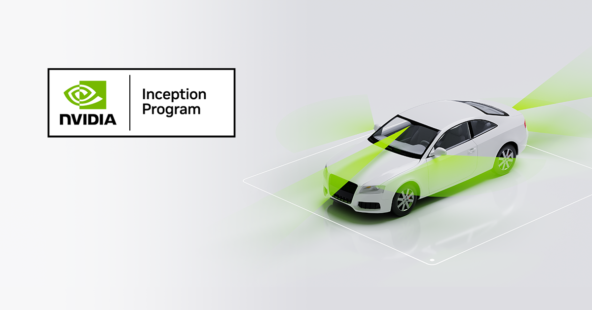

Patient + caregiver
Can I understand the next step and get it done?
A Voithos360 framework
Does your care model reach the right patient, for the right problem, at the right time, with the right intervention and person?
Built on a clinical discipline: getting care right means aligning the patient, problem, timing, action, and person.
Five questions for your current model
Who is showing evidence that intended care may not be completed?
What is getting in the way: understanding, access, cost, scheduling, or coordination?
When can intervention still change the care trajectory?
What action addresses this patient's specific barrier?
Who is best positioned to act: patient, caregiver, provider, or care team?
For each right: What evidence do you have? What is missing? Who owns the next step?
Four perspectives. One care journey.
Can I understand the next step and get it done?
Is the care I intended actually happening?
Who needs help, what will help, and who should act?
Where could earlier action change outcomes and cost?
V360 connects longitudinal evidence of clinical intent, progress, and barriers to help teams recognize unresolved care and consider earlier action.
The opportunity after the visit
A reminder, scheduling support, cost assistance, or clarification of the plan: useful intervention starts with understanding the barrier. When the barrier is unknown, confirming it is a next step.
Illustrative economic opportunity
modeled net annual savings
The referral/follow-up scenario estimates value when earlier signals lead to an effective intervention, then subtracts the cost of reaching patients and operating the program.
Scenario estimates, not demonstrated savings or ROI. The conservative scenario yields a $175,000 net annual loss. All drivers require partner validation; earlier detection alone does not establish intervention benefit.
100,000 lives; 0.75 eligible episodes per member/year; 15% delayed; 60% detectable early; 70% reached; 20% of reached episodes resolved; $1,000 avoided cost per resolution; $15 per reached episode; $200,000 annual fixed cost.
75,000 episodes → 11,250 delays → 6,750 early signals → 4,725 reached → 945 resolved. $945,000 gross value − $270,875 total cost = $674,125 net annual value.
Source: Voithos360 Economic Opportunity Model, October 1, 2026. Inputs are illustrative and do not establish savings versus your current model.
Data partnership or first paid pilot
Start with a proposed 100–300 historical referral or follow-up episodes under an agreed data scope and access arrangement.
Evaluate execution evidence, barriers, detection, and defensible timing using independent reference events. Receive a pathway-specific report on findings and limits.
Choose one population, one pathway, and an existing care team. Agree scope, commercial terms, readiness requirements, and success measures before launch.
Measure useful signals, false alerts, intervention reach, completed next steps, and staff time. Assess cost and utilization where the study supports attribution.
Current stage: working MVP and controlled synthetic benchmark evidence. Real-world clinical and financial effects remain to be established. Any partner data must follow the agreed governance and security requirements.

Voithos360 is a member of NVIDIA Inception.